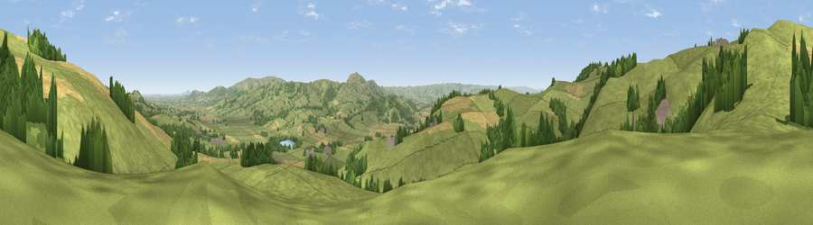

Viewpoint near Marton
#13441 in England · top 44% of its area beats it · near MartonThe view, rendered

A 360° render of this exact spot computed from the terrain model, tree cover and land cover — summer colours, afternoon light, calibrated against photographs of famous viewpoints. Real trees, hedges and buildings will differ in detail.
The panorama
Grey silhouette: terrain skyline in each direction (720 bearings, Earth curvature and refraction included). Dashed green: skyline with trees (+15 m) and buildings (+8 m) as obstacles. Blue strip: how far the ground is visible on each bearing.
Where the view opens
Wedge length = distance to the farthest visible ground on that bearing (vegetation-aware). Rings at 10, 25 and 50 km.
What fills the view
79% grassland · 12% cropland · 8% woodland ·
Angular shares of the visible panorama (visual magnitude), not map area. Landscape diversity 0.30 (0–1 Shannon).
Key numbers
More beautiful places nearby
The staircase of upgrades: each row has a higher view potential than everything closer. Driving times are estimates from straight-line distance, calibrated against real road routing — check an actual route before setting out.
| Place | Direction | Drive | Score |
|---|---|---|---|
| Viewpoint near Marton | NNW · 1 km | ~4 min | 71.9 |
| Bromlow Callow | ESE · 6 km | ~12 min | 76.8 |
| Viewpoint near Vennington | NNE · 7 km | ~14 min | 80.8 |
| Viewpoint near Halfway House | NNE · 10 km | ~19 min | 83.3 |
| The Lawley | ESE · 23 km | ~37 min | 85.8 |
| Viewpoint near Little Wenlock | E · 35 km | ~53 min | 86.6 |
| North Hill | SE · 76 km | ~99 min | 86.8 |
| Worcestershire Beacon | SE · 77 km | ~100 min | 87.1 |
52.62914, -3.06999 · source: screening · position refined by local search. Computed location — check access rights before visiting.